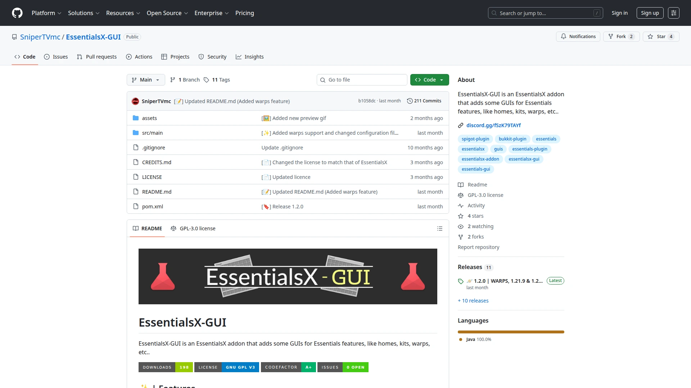

EssentialsX-GUI - 2025
EssentialsX-GUI est un plugin Minecraft qui offre des interfaces graphiques conviviales pour gérer les fonctionnalités d'EssentialsX, facilitant ainsi la configuration et l'utilisation des commandes du serveur.
J'ai 18 ans, je suis étudiant au lycée Gaston Berger à Lille, et je suis passionné par la programmation.
Découvrir mes projets
Cela fait maintenant plus de cinq ans que je m'intéresse à la programmation. Depuis mes
débuts et jusqu'à aujourd'hui, j'ai pu acquérir de solides compétences dans le domaine.
Ayant principalement travaillé en Java, et Python, je suis à l'aise avec la
programmation orientée objet.
Mon intérêt s'est surtout porté sur le développement backend et l'administration système,
bien que j'aie aussi des connaissances en HTML, CSS et JavaScript.
De ce fait, j'ai pu m'intéresser à l'administration système sous Linux, notamment à travers
la gestion de mon propre serveur Minecraft : gestion de sites web avec Apache,
de bases de données avec MariaDB, d'un serveur mail avec Poste.io, la gestion de
domaines avec Cloudflare et Certbot, et également d'une infrastructure permettant la
gestion de serveurs de jeu avec Pterodactyl (ou son successeur Pelican).
Intéressé par mon profil ou un projet ? Laissez-moi un message !